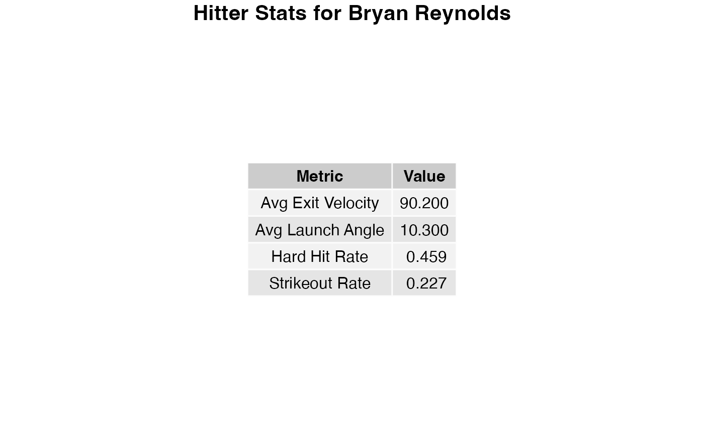
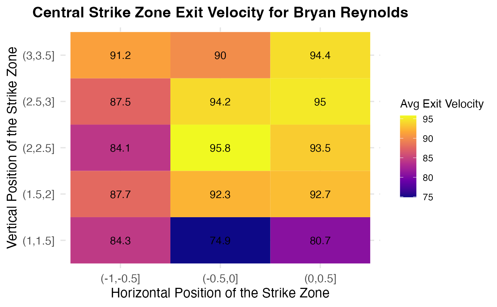
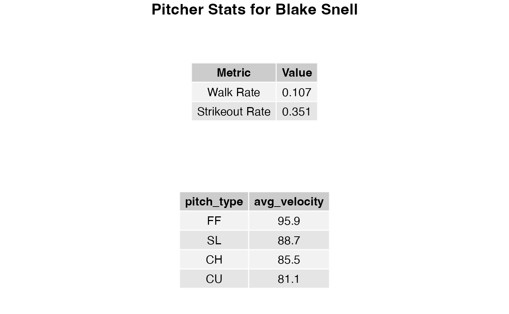
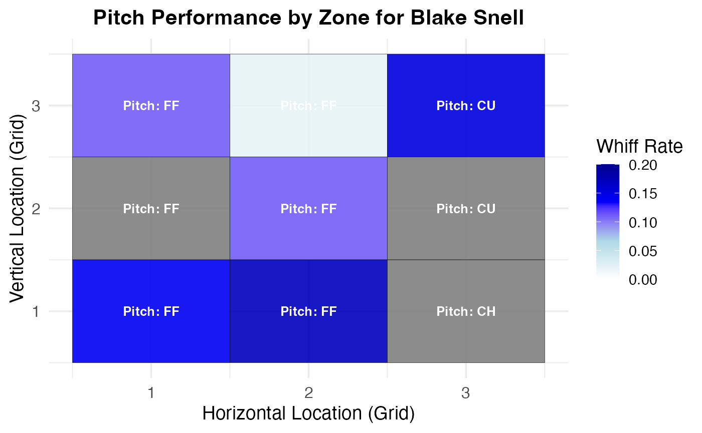

vignettes/baseballscouting_home.Rmd
baseballscouting_home.Rmd
library(baseballscouting)
#> Warning: replacing previous import 'data.table::last' by 'dplyr::last' when
#> loading 'baseballscouting'
#> Warning: replacing previous import 'data.table::first' by 'dplyr::first' when
#> loading 'baseballscouting'
#> Warning: replacing previous import 'MASS::select' by 'dplyr::select' when
#> loading 'baseballscouting'
#> Warning: replacing previous import 'data.table::between' by 'dplyr::between'
#> when loading 'baseballscouting'baseballscouting
The baseballscouting package provides tools to explore
and analyze baseball data, helping you uncover where certain pitchers
and hitters excel—and where they don’t. Additionally, the package
includes simulation capabilities that allow you to predict outcomes of
matchups between pitchers and batters. This dual focus makes
baseballscouting an excellent toolkit for both baseball
enthusiasts and data analysts.
baseballscouting?
With baseballscouting, you can dive deep into baseball
statistics to:
By leveraging comprehensive data and powerful visualizations, you can uncover patterns and trends that would otherwise go unnoticed.
generate_hitter
Function
hitter_ids <- c(668804) # Bryan Reynolds
start_date <- "2024-01-01"
end_date <- "2024-12-31"
generate_hitter(player_ids = hitter_ids, start_date = start_date, end_date = end_date)
#> Fetching data for player 668804 ...
The first table shows you the average exit velocity (how fast the ball is hit), average launch angle of the ball, hard hit rate (percentage of percentage of batted balls hit 95 MPH or greater), and strikeout rate (how often a hitter strikes out).
The heatmaps shows you the average exit velocity of batter across different areas of the strike zone. This can give valuable insights into where the hitter struggles and where they excel and give a pitcher a better idea of where to try to pitch them.
generate_pitcher
function
pitcher_ids <- c(605483) # Gerrit Cole
start_date <- "2024-01-01"
end_date <- "2024-12-31"
generate_pitcher(player_ids = pitcher_ids, start_date = start_date, end_date = end_date)
#> Fetching data for player 605483 ...
The first table shows the walk rate (how often pitchers walk batters, given by a proportion of number of walks divided by batters faced) and the strikeout rate (how often a pitcher strikes batters out given by a similar proportion).
The heatmap show how often batters swing and miss at a pitcher’s pitches (given by a proportion of number of swings and misses divided by the total number of swings). If a pitcher generates more swings and misses then this is generally a good indicator that their pitches are moving and performing how they want.
The package’s simulation tools allow you to model hypothetical matchups between pitchers and batters. These simulations take into account factors like:
For example, you can simulate 1,000 at-bats between a specific pitcher and hitter to predict likely outcomes such as strikeouts, walks, and hits. These insights can be used for strategy, analysis, or just for fun.
Here’s how you can use baseballscouting to simulate
matchups between a pitcher and a batter. Let’s see how Gerrit Cole might
fare against Mike Trout over a simulated series of at-bats.
results <- at_bat_sim(
pitcher_id = 543037, # Gerrit Cole
batter_id = 545361, # Mike Trout
start_date = "2022-04-01",
end_date = "2022-10-01",
num_simulations = 1000,
num_cores = 2
)
#> Outcome Probability
#> 1 double 0.042
#> 2 flyout 0.148
#> 3 groundout 0.212
#> 4 home_run 0.031
#> 5 single 0.133
#> 6 strikeout 0.362
#> 7 triple 0.009
#> 8 walk 0.063The output data frame contains two columns:
Outcome: The type of event (e.g., strikeout, walk,
single, etc.).Probability: The likelihood of the event occurring,
based on the simulation results.For example:
| Outcome | Probability |
|---|---|
| strikeout | 0.23 |
| walk | 0.08 |
| single | 0.15 |
| … | … |
This gives you an analytical view of how the matchup could play out based on the players’ historical data.
To begin, install the package (code below) and start exploring! Here are some additional resources to guide you:
devtools::install_github("braeden-falzarano/baseballscouting")We’re excited to see what insights you uncover with
baseballscouting!